MERA — Explained From Scratch
Full title: "MERA: Model Evolution and Routing with Skill Adaptation for Agentic Systems at Scale." Venue: RL-Eval 2026 workshop (OpenReview id 6oyBiDMCHs). Code: github.com/zeyuyuyu/router-skills-evolve. You are the third of seven authors (byline "Tongyun Yang," Independent Researcher); the corresponding author is Tianyu Shi (Gradient).
This page teaches MERA from zero — the problem it solves, every component, and the exact numbers — so you can defend it cold in front of Versley, who will read the routing pair (TwinRouterBench + MERA) most carefully. It pairs with the ★ Own Papers — Ground-Truth Defense (the verified numbers + Q&A) and the ★ Four Papers — Taught From Scratch overview; this one goes deeper and is more heavily illustrated. Read it slowly once, then skim the diagrams the night before.
⚠ The one trap that can sink this conversation: 87.3% is router accuracy, not task accuracy.
It is how often the learned router's cheap-vs-strong decision matches held-out labels on an 832-example set. It is not the agent answering 87.3% of tasks correctly — and the paper reports no end-to-end agentic task-success rate at all. The only task-quality number anywhere in the paper is the 1.5B student's MBPP pass rate, ~47.5% vs ~47.0% baseline — essentially flat. Volunteer this distinction before Versley forces it; he will catch a misread in one sentence and the rest of the hour is uphill. Say "router accuracy 87.3% at ~52% serving cost" every single time.
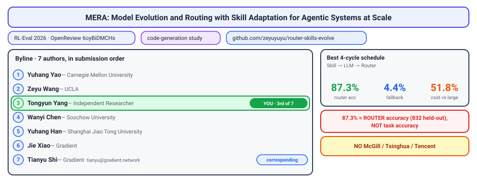
1 · The problem, from absolute zero
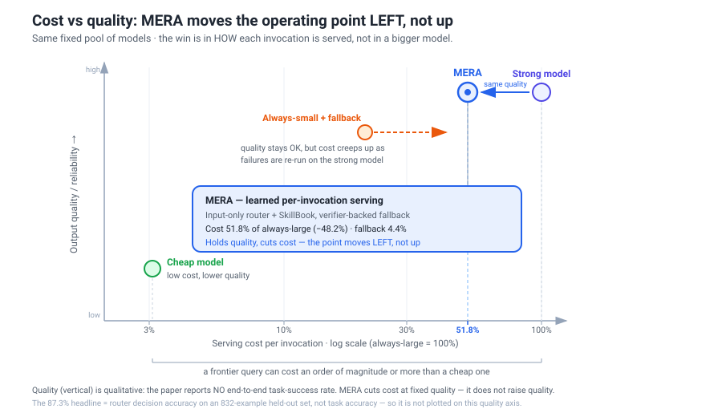
Start from the unit of work. An agent is an LLM that doesn't answer once and stop; it runs a loop: read a prompt, call a tool, read the result, write the next step. A single user task can spawn many of these invocations, and every invocation is a model call you pay for.
Now look at the bill. Not all calls cost the same. A frontier model (the biggest, strongest one) can cost often an order of magnitude or more per query than a small, cheap model. Once you put a fixed pool of models behind your agent, that ratio becomes the whole economic story: most of your spend is the strong model being asked to do things a cheap model could have handled.
Here is the catch. The cheap model is genuinely good enough on the easy steps. Format this JSON. Extract a field. Build one tool argument. On steps like those, a small model matches the big one at a fraction of the price. It only breaks down on the hard steps: long-horizon reasoning, tricky code generation, anything that needs real capability. So your workload is a mix, and the price of each model has almost nothing to do with the value it adds on any given step.
The obvious fix is the always-small, escalate-on-failure strategy: send everything to the cheap model, and whenever it fails, retry on the strong one. This is reliable, because you never ship an answer the cheap model couldn't actually produce. But its cost quietly creeps back up. Each escalation means you paid for the cheap attempt and the expensive one, plus the latency of doing the work twice. The more often the cheap model stumbles, the more your "cheap" pipeline starts to resemble the expensive one with extra steps bolted on.
So you are stuck between two bad defaults: always-large (safe but costly) and always-small-then-escalate (reliable but cost drifts upward). The frontier you actually want is the dashed curve above: the same quality for less cost. The lever that moves you toward it is routing — deciding, before you spend, which model each individual step deserves.
How to say it in the room: "The bill isn't model size, it's serving the wrong-sized model to each step. Routing is the lever that fixes that without touching the models."
2 · The key idea — route inside the trace, not once per task
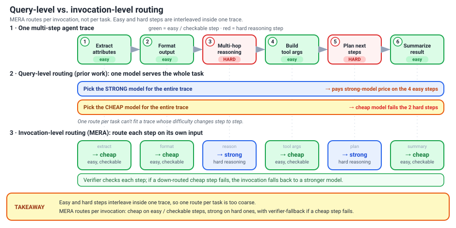
Start with the picture above. A modern agent does not answer a task in one shot. It runs a chain of model calls: read the prompt, plan, call a tool, parse the result, format an answer, retry on failure. Each box in that chain is a separate model invocation, and the whole chain is one trace.
The point the diagram is making: the steps are not uniformly hard. Inside a single trace, trivial steps sit right next to genuinely hard ones. Building one tool argument or reformatting a list is easy and cheaply checkable; the long-horizon reasoning step in the middle may really need the strong model. Easy and hard are interleaved.
Now look at how prior work routes. Query-level routing makes one cheap-vs-strong decision for the entire user task and then runs every step on that choice. That granularity is too coarse. It either overpays, sending an easy reformat to the strong model, or it gambles, betting the hard step on the cheap one. You cannot fix both with a single per-task switch.
MERA's central move is to shrink the unit of adaptation. The thing it routes, observes, and learns over is a single invocation, not a task. At each step it decides cheap model vs strong model vs optional specialized student, using only what that one step exposes. This is invocation-level routing inside the trace, and it is the genuinely new granularity in the paper.
How to say it in the room: "Prior routers pick one model per query; we route per model call inside the agent's trace, because easy and hard steps are mixed together in the same task."
But here is the danger that shapes everything after this section. If you let the system adapt freely on every invocation, two failure modes open up. A cheap model can fail silently, producing a plausible-looking but wrong output that nobody catches. And a learned adapter can regress on rare cases it was never really trained for. Down-routing aggressively is exactly when these bite.
That is why MERA never treats "I observed this is easy" as permission to change behavior. It separates observation from admission: every step is logged, but a cheaper policy is only deployed after a gate proves quality held. The rest of the design is that separation.
3 · Loop 1 — the runtime path

Loop 1 is what happens on a single model call inside a running agent. Picture the agent mid-trace, about to make its next invocation (one LLM-or-tool step). MERA intercepts that step and decides how to serve it. The whole loop lives at the granularity of one invocation, not one user task — that per-invocation granularity is the genuinely new part.
Walk the path:
1. The router looks — and it is input-only. The router (a plain BERT-tiny classifier over prompt text) sees only the serialized prompt plus local context for this one step. It does NOT see hidden agent state, scratchpad memory, or earlier tool-execution traces. From that text alone it picks one of three serving options: the strong model, the cheap model, or the optional 1.5B specialist (the Qwen2.5-Coder-1.5B LoRA adapter, when one exists for this region).
2. A SkillBook template may fire instead. If the local structure matches a recurring prompt signature — a known formatting, extraction, or single-argument shape — the skill selector can short-circuit the model call and dispatch a stable SkillBook template at near-zero cost.
3. The chosen path executes. Cheap model, strong model, specialist, or template — whatever was selected runs and produces an output.
4. The verifier checks, then falls back. A verifier tests that output: schema validity, tool-call legality, and executable tests. On failure the invocation falls back to a stronger model, and the full event is logged — retry count, fallback metadata, what was tried. That log is the fuel for Loop 2.
Now the line to internalize:
How to say it in the room: "Cost savings come from the router and SkillBook down-routing the easy, checkable steps; the safety guarantee comes entirely from the verifier-fallback. The two are decoupled — an aggressive router can't silently degrade output, because the verifier catches it and escalates."
Why input-only? It keeps serving simple and portable: you route on the prompt you already have, with no plumbing into agent internals, so the router drops into any stack. And crucially, it makes Loop 2's replay reproducible — the routing decision is a pure function of logged text, so you can re-score it offline exactly as it ran.
The cost of that choice: two steps with identical local prompts but different history get routed the same way, even when their broader context differs. MERA accepts this and absorbs it from both ends. The verifier-fallback catches any down-route that was actually wrong and escalates it, so a context-blind mistake is corrected rather than shipped. And SkillBook signatures are kept narrow — a length tier plus a few semantic tags — so a template only fires where the local shape is genuinely stable, not wherever the surface text happens to look similar.
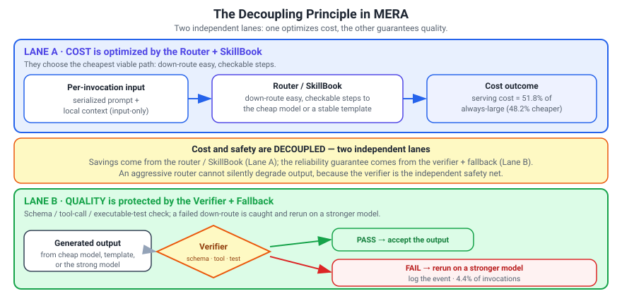
4 · The SkillBook, precisely
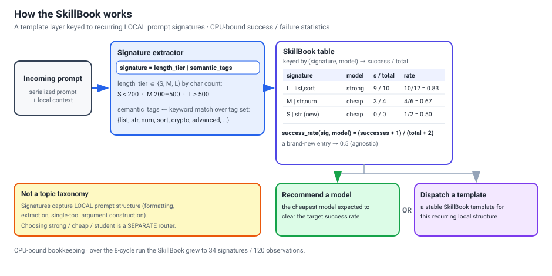
The single most common misread of your paper is that the SkillBook is a topic taxonomy — code vs. math vs. summarization, with a classifier picking a bucket. It is not. There is no skill classifier and no semantic categories. The SkillBook is a layer of stable templates keyed to recurring local prompt signatures: small, repeatable shapes inside an agent trace like a formatting step, a field extraction, or a single tool-call argument. Each template carries CPU-bound success/failure statistics, nothing heavier.
The signature. A signature is just two cheap features of the current prompt, concatenated:
signature = length_tier | semantic_tags
- length_tier ∈ {S, M, L} by character count: S < 200, M = 200–500, L > 500.
- semantic_tags come from keyword matching over a tiny tag set —
{list, str, num, sort, crypto, advanced, bool, ...}.
So a short string-manipulation prompt might hash to something like S | str. No embeddings, no model call — this is deliberately cheap and deterministic.
The confidence. For each (signature, model) pair you track a Laplace-smoothed success rate:
success_rate(sig, model) = (successes + 1) / (total + 2)
A brand-new entry therefore starts at 0.5 — genuinely agnostic, neither trusted nor distrusted — and moves toward the observed rate as evidence accumulates. The +1/+2 smoothing keeps a single lucky or unlucky early outcome from swinging a fresh entry to 0 or 1.
What it buys you. Given a matching signature, the SkillBook recommends the cheapest model expected to clear a target success rate, or fires a stable template directly instead of invoking a model at all. It is a lookup, not an inference. Over the full 8-cycle run it stayed small — 34 signatures / 120 observations — which is the honest scale: it captures repetition, not the whole input space.
Crucially, of MERA's three offline tracks, the SkillBook is the cheapest to update: it is pure CPU-bound counting over canonicalized step slices, no gradients, no GPU.
How to say it in the room: "The SkillBook isn't topics — it's templates keyed to a length-tier-plus-tags signature, with Laplace-smoothed hit rates starting at 0.5, so it can cheaply recommend the cheapest viable model or just fire a known-good template."
5 · Loop 2 — three tracks over shared traces
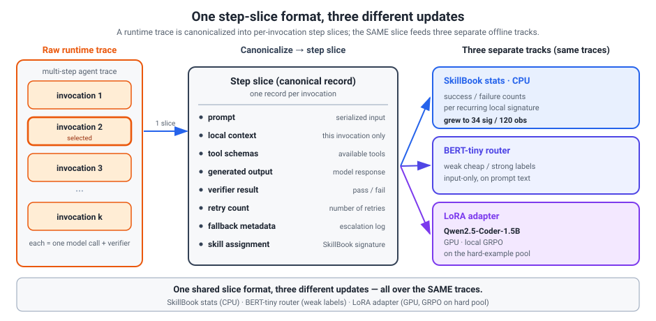
Loop 1 ran the agent and logged everything. Loop 2 is the offline half: it turns those logs into model updates without ever re-running the agent.
The shared unit: the step slice. Loop 1 doesn't hand back one verdict per task — it hands back every individual invocation. Loop 2 canonicalizes each one into a step slice, a flat record with the same fields every time:
- prompt and local context (what the model actually saw)
- tool schemas available at that step
- generated output
- verifier result (pass/fail, and why)
- retry count
- fallback metadata (did it bounce to a stronger model?)
- skill assignment (which SkillBook signature, if any)
The point is that this is one format. The same slice feeds three completely different learners — you canonicalize the trace once, then read it three ways.
Track 1 — SkillBook stats (CPU-bound). For each (signature, model) pair you tally successes and failures and refresh the Laplace-smoothed confidence. No GPU, no training; it's bookkeeping over the slices.
Track 2 — the BERT-tiny router (GPU, light). The router retrains on slice prompt text with weak cheap-vs-strong labels derived from what actually worked. It stays input-only: it never sees hidden agent state or the downstream execution trace, only what was visible at decision time.
Track 3 — the LoRA adapter (GPU-heavy). The hard-example pool — slices where cheap execution failed, or where router and SkillBook disagreed — feeds local GRPO on Qwen2.5-Coder-1.5B. This is the one expensive job.
Order is scheduling, not method. All three read the same slices, so the within-cycle order is just a resource decision. The best observed schedule is Skill -> LLM -> Router: run the cheap CPU bookkeeping first, then the GPU-heavy adapter, then the router last. Reorder it and you land on a different cost/accuracy point, not a different method.
The only firm wall-time lever is parallelism: the router and LLM tracks are the GPU-bound ones, and running them together drops a cycle from 99 to 95 minutes.
How to say it in the room: "We canonicalize each invocation into one step-slice format, then read those same slices three ways — SkillBook counts, a tiny router, and a GRPO adapter. The order is a scheduling choice, not a methodological one."

6 · The learned router
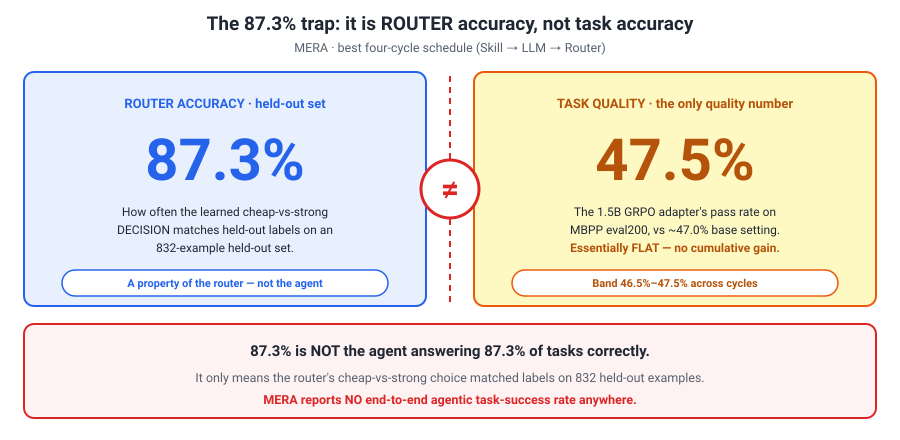
The router is the part most people misread, so build the mechanics first and the headline number second.
Mechanically, the router is deliberately boring: a plain BERT-tiny classifier that reads only the serialized prompt and local context for the current invocation and emits a cheap-vs-strong decision. No agent hidden state, no execution traces; it is input-only by design. Route more aggressively toward the cheap model and you save cost but risk more failures, which is exactly what the verifier exists to catch.
Now the headline. The best four-cycle schedule reports 87.3% router accuracy. Read that phrase literally:
Router accuracy = how often the router's cheap/strong call matches the held-out label, on an 832-example held-out set. That is all it means.
It is not task accuracy. It does not say the agent solves 87.3% of tasks; the paper reports no end-to-end agentic task-success rate at all. The only number that touches task quality is the small adapter's MBPP score: 47.5% for the GRPO adapter versus ~47.0% base, essentially flat and unrelated to routing. So treat 87.3% as a serving-policy fit metric, not an outcome metric.
The circularity you must say out loud. The router is trained on 3,328 router examples whose labels are weak, produced by the UncommonRoute pipeline rather than by humans or an oracle. The 832 held-out examples come from that same distribution. So 87.3% measures how well the router agrees with the weak labelling scheme it was trained against, not how often a cheap model would truly have sufficed. If the labels are biased, this number inherits the bias.
What keeps deployment honest is not the router but the independent verifier-with-fallback. The verifier runs schema, legality, and executable checks; when a down-route fails it escalates to a stronger model, and the measured fallback rate is 4.4%. That is your real safety signal: an aggressive router cannot silently degrade output, because a separate mechanism catches its mistakes.
How to say it in the room: "87.3% is router accuracy on an 832-example held-out set, agreement with weak UncommonRoute labels, not task success. The number that actually protects users is the 4.4% verifier fallback."
Keep the novelty claim modest. The classifier itself is off-the-shelf BERT-tiny. What is new is where it routes, per invocation inside a trace, and that it is admitted jointly with the SkillBook and adapter, not the routing algorithm.
7 · The LLM adapter — and why GRPO stalls here
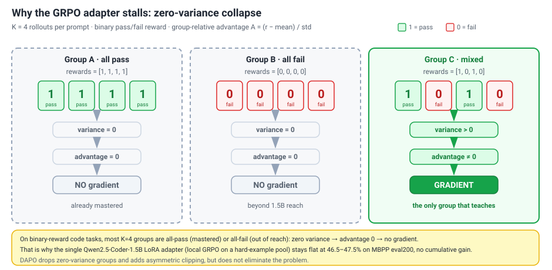
This is the weakest leg of MERA, and the paper is honest about it. The "model evolution" track is one student: a single Qwen2.5-Coder-1.5B carrying a LoRA adapter. It is not a fleet of specialists and not a 7B model — just one small coder you try to nudge upward over time.
You train it only on a hard-example pool: tasks where cheap execution failed, or where the router and the SkillBook disagreed about which model to trust. Those are exactly the cases the cheap path can't yet handle, so they're where a stronger student would buy you the most.
The method is GRPO (Group-Relative Policy Optimization). The intuition: for each prompt you sample K rollouts, run the executable tests, and hand each one a binary pass/fail reward r. Instead of a value network, GRPO scores each rollout against its own group — the advantage is A = (r − mean) / std over those K samples. A rollout that beats the group average gets pushed up, a below-average one gets pushed down. No critic, no extra model; the group is its own baseline.
That design is also where it breaks. Zero-variance collapse: if all K rollouts pass (all-1) or all fail (all-0), the group has zero spread, every advantage is 0, and the gradient vanishes. Only mixed groups — some pass, some fail — teach anything. On binary-reward code tasks, a large share of prompts are already mastered (all-pass) or beyond a 1.5B model's reach (all-fail), so most groups contribute nothing. The outcome is exactly what the paper reports: the adapter sits in a flat 46.5–47.5% band with no cumulative gain across cycles. DAPO softens this — drop the zero-variance groups, add asymmetric clipping — but does not eliminate it.
How to say it in the room: "The 1.5B doesn't improve because most groups are all-pass or all-fail — zero variance means zero gradient, so GRPO has almost nothing to learn from."
Why GRPO instead of SFT or distillation off the strong model? Because on these hard cases the strong trace may itself be wrong, so imitating its tokens copies bad supervision. GRPO instead learns from execution outcomes — the tests — which is the signal you actually trust here.
Be candid about the rest: the paper's own verdict is that the adapter is modest and its gains are non-cumulative. Any prettier per-cycle number in the repo is a living draft, not the submitted result — the paper's reported result is the flat band with no cumulative gain.
8 · The joint-replay admission gate — the real contribution
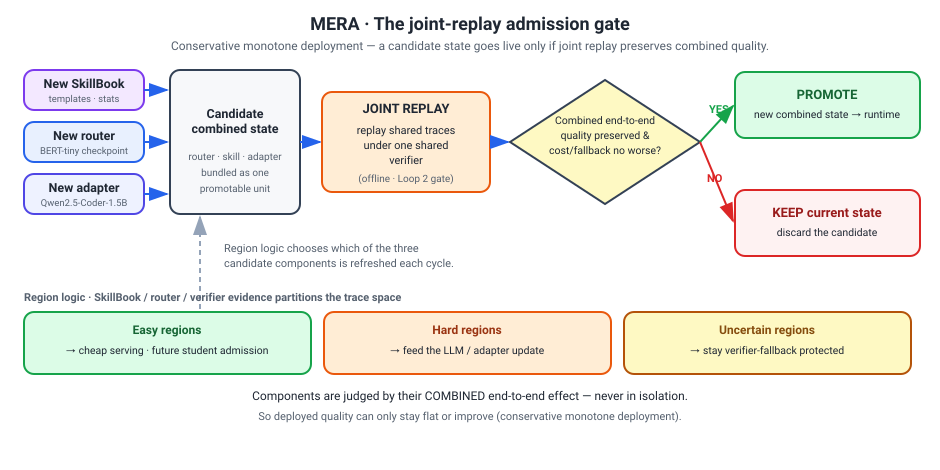
Everything so far — the router, the SkillBook, the LoRA adapter — is plumbing. The actual contribution is the rule for when you're allowed to change that plumbing.
Here is the discipline. After a cycle produces a new combined router/skill/adapter state, you do not ship it because the router got more accurate, or the SkillBook grew, or the adapter's pass rate ticked up. You ship it only if a joint replay — re-running the saved traces through the whole new configuration together — shows end-to-end quality is preserved while cost or fallback risk goes down (and neither gets worse). Components are judged by their combined effect, never by isolated metrics. A router that looks 3 points sharper in a vacuum but quietly raises the fallback rate does not get promoted.
How to say it in the room: "We don't admit a component because its own number improved. We admit a new combined state only if a joint replay shows quality held and cost or fallback dropped. Improvements are evaluated together, end to end."
The replay leans on the evidence the SkillBook, router, and verifier accumulate, which partitions the trace space into three regions:
| Region | What it means | What happens to it |
|---|---|---|
| Easy | cheap serving reliably passes the verifier | candidate for down-routing, or for admitting the student later |
| Hard | cheap serving keeps failing | feeds the LLM (adapter) update; stays on the strong model for now |
| Uncertain | mixed or thin evidence | left under verifier-fallback protection |
Notice that nothing risky is forced. Easy regions are where you harvest savings; hard regions are where you try to teach the small model; uncertain regions simply stay protected. You only move work to a cheaper path once the evidence — confirmed by replay — says it survives.
This is what the paper calls conservative monotone deployment: across cycles, quality can only hold or improve, never silently regress, because a regressing state never clears the gate. Cost and fallback are allowed to fall; quality is not allowed to fall.
And that is the whole point of the framework. Invocation-level routing inside a live agent trace is aggressive — you are repeatedly betting on a cheaper model mid-task. The admission gate is what makes that bet safe to ship: the system can get cheaper over time, but it cannot quietly get worse.
9 · The experiments, with the exact numbers
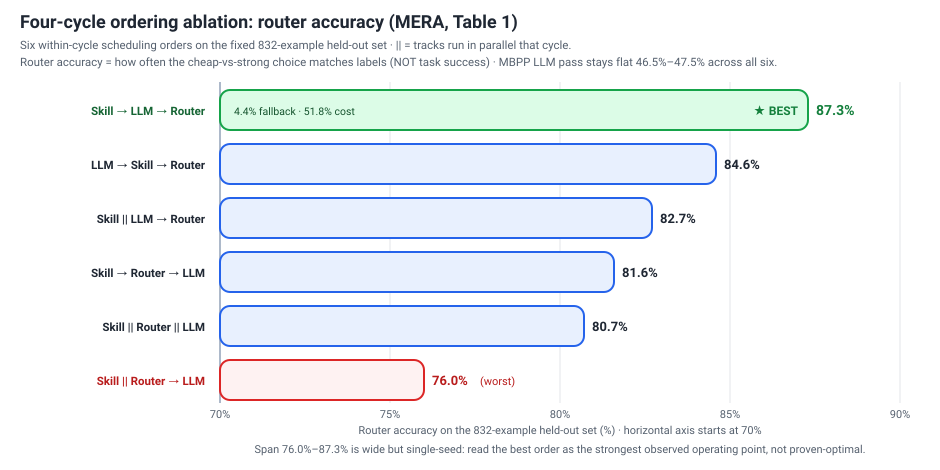
Everything in MERA is evaluated on code generation only — chosen precisely because code gives a cheap, near-objective verifier (run the tests). Keep that framing: it is a feasibility-and-ablation study, not a deployment result.
The Evolver Dataset. Two cleanly separated pools:
| Pool | Size | Splits (Train / Dev / Test) | What it is |
|---|---|---|---|
| Executable code tasks | 590 | 472 / 59 / 59 | HumanEval, MBPP, and hard traces — tasks with runnable tests |
| Weakly-labelled router examples | 3,328 | 2662 / 332 / 334 | Prompts with weak cheap/strong labels (from a pipeline called UncommonRoute) |
Router accuracy is always measured on a fixed 832-example held-out set; the LLM pass rate is always MBPP eval200. The router is a BERT-tiny checkpoint; the student is a Qwen2.5-Coder-1.5B LoRA adapter trained with local GRPO.
Table 1 — the four-cycle ordering ablation (the main result). The three offline tracks can be scheduled in different within-cycle orders; || means two tracks run in parallel that cycle. Router metrics are on the 832 held-out set; LLM pass is MBPP eval200. This is a scheduling study, not six different methods.
| Ordering (within each cycle) | Router acc. | Fallback | Cost vs. large | LLM pass | Wall time |
|---|---|---|---|---|---|
| Skill ‖ Router → LLM | 76.0% | 3.8% | 63.2% | 47.0% | 100 min |
| Skill ‖ Router ‖ LLM | 80.7% | 4.7% | 57.8% | 47.0% | 95 min |
| Skill → Router → LLM | 81.6% | 3.9% | 57.7% | 47.5% | 99 min |
| Skill ‖ LLM → Router | 82.7% | 4.1% | 56.4% | 47.5% | 99 min |
| LLM → Skill → Router | 84.6% | 4.1% | 54.5% | 47.0% | 97 min |
| Skill → LLM → Router | 87.3% | 4.4% | 51.8% | 46.5% | 99 min |
The headline operating point is the bottom row: 87.3% router accuracy, 4.4% fallback, 51.8% of always-large cost. Read the four columns as four different deployment risks: router accuracy = does the learned gate match held-out labels; fallback = fraction of invocations rejected and rerun on the strong model; cost = normalized to always-large (lower is better); LLM pass = the small adapter alone on MBPP (not used as the admission criterion). Notice the LLM column barely moves (46.5–47.5%) across every ordering — that is the honest signal that the GRPO track is not yet earning its keep. The only clear wall-time win is parallelizing the GPU-heavy tracks (99 → 95 min).
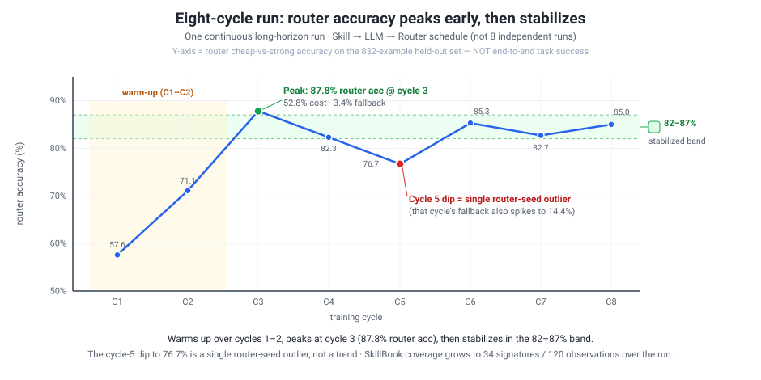
Table 2 — the eight-cycle long-horizon run (Skill → LLM → Router; one continuous run, not eight independent runs):
| Cycle | 1 | 2 | 3 | 4 | 5 | 6 | 7 | 8 |
|---|---|---|---|---|---|---|---|---|
| Router acc. | 57.6% | 71.1% | 87.8% | 82.3% | 76.7% | 85.3% | 82.7% | 85.0% |
| Fallback | 0.4% | 4.3% | 3.4% | 3.5% | 14.4% | 3.1% | 4.6% | 4.0% |
| Cost vs. large | 85.6% | 68.6% | 52.8% | 57.4% | 54.2% | 56.0% | 56.6% | 54.3% |
It warms up over the first two cycles, peaks at cycle 3 (87.8%), then stabilizes in the 82–87% band. The cycle-5 dip to 76.7% (with fallback spiking to 14.4%) is consistent with a single router-seed outlier, not a trend — and because there are no multi-seed runs, you cannot fully separate ordering effect from seed noise. Over the run, SkillBook coverage grows to 34 signatures / 120 observations; the LLM track stays pinned in the 46.5–47.5% band.
How to say it in the room: "The strongest four-cycle schedule is Skill → LLM → Router at 87.3% router accuracy, 4.4% fallback, and 51.8% of always-large cost. I'd present that as the strongest observed operating point in a single-seed study, not as proven-optimal — the ordering spread runs from 76% to 87% and we flag multi-seed as future work."
10 · What is genuinely new (and what is not)
Your strongest move in the room is to say, first and unprompted, what MERA does not invent. There are exactly two real deltas, and a lot of deliberately ordinary machinery underneath.
The two genuine contributions, both relative to prior per-task routing and cascade work:
- Invocation-level granularity. Prior routing picks one model per user task. MERA routes inside a multi-step agent trace, choosing strong / cheap / specialized per invocation from input only.
- Joint, replay-gated admission. Three heterogeneous tracks — SkillBook stats, the BERT-tiny router, the LoRA adapter — update over shared traces and are promoted together only after an offline joint replay shows combined end-to-end quality is preserved. Components are judged by their combined effect, never in isolation.
What is not new:
- The router is a plain BERT-tiny classifier over prompt text — no new routing algorithm.
- The SkillBook is Laplace-smoothed success/failure statistics over local prompt signatures — simple, not learned.
- GRPO is standard; here it is just the textbook reason the 1.5B adapter stays flat.
So the contribution is the systems framework plus the admission discipline plus an honest diagnostic study — what pays off (cheap, verifiable down-routing) and what does not (no cumulative student gains). No model gets bigger; the value is in how a fixed pool is served and safely evolved.
How to say it in the room: "Nothing here is a new algorithm — the novelty is invocation-level granularity and replay-gated admission of three tracks together, plus an honest study of where it actually pays off."
11 · Honest limitations (own these out loud)
You score points by naming these before the panel does. None of them sinks the paper; each is a known boundary of a feasibility study, so volunteer them rather than wait to be pressed.
The verifier is load-bearing. Every cost claim rests on it. If a semantic failure slips past the schema, tool-call, and executable-test checks, MERA records the down-route as safe when it wasn't, so a weak verifier makes the savings look better than they really are. This is the limitation you guard most carefully.
Simple-first bias. Gains arrive gradually because MERA only down-routes steps it can already check cheaply. Hard, long-horizon reasoning stays on the strong model for a long time, so you never see a sudden jump.
Replay isn't fully online. The admission gate evaluates on logged traces, so it cannot perfectly capture the policy's own distribution shift once a new state is deployed.
Skill promotion needs structure. The SkillBook only grows where local subgraphs are canonicalizable and the workload repeats. With no recurring prompt signatures, there is nothing stable to template.
The adapter is modest. The Qwen2.5-Coder-1.5B GRPO student stays flat (46.5–47.5% on MBPP eval200) with no cumulative gain across cycles. Say that plainly instead of implying the small model is steadily learning.
"At Scale" oversells it. This is a 590-task code-generation study, an ablation plus feasibility check, not a production deployment. Own the title gap before someone else points at it.
What is simply not measured. No end-to-end agentic task-success rate. No human or A/B evaluation. No multi-seed or significance testing; the held-out router set is 832 examples, single-seed. These are future work, not buried weaknesses.
How to say it in the room: "Everything rides on verifier coverage, the gains come in slowly by design, and to be clear it's a single-seed code-gen feasibility study with no end-to-end task-success number yet."
12 · How Versley will probe it — and how to answer
These are the five pressure points, with spoken-length answers. The pattern throughout: volunteer the weakness before he forces it.
Q — "87.3% accuracy of what? Is that the agent getting tasks right?" "I want to be careful, because it's easy to misread. 87.3% is router accuracy — how often the learned cheap-vs-strong decision matches held-out labels on an 832-example set. It is not end-to-end task success. The only task-quality number we report is the 1.5B student's MBPP pass rate, about 47.5% versus a 47.0% baseline — essentially flat. The fair summary is: the router reproduces the cheap-or-strong decision well, which lets us hold quality roughly constant while cutting serving cost to ~52% of always-large at a 4.4% fallback rate."
Q — "Your router is graded against weak labels from the same pipeline that made your training data. Isn't that circular?" "That's the weakest part of the evaluation, and I'll concede it. The 3,328 router examples are weakly labelled and the 832 held-out set is same-distribution, so router accuracy measures agreement with weak labels, not a verified oracle. What keeps deployment honest is decoupled from that — it's the verifier. At runtime the router can be wrong; the verifier catches schema, tool-call, and executable-test failures and falls back, and that fallback rate is 4.4%. So I read router accuracy as an internal optimization metric, and the fallback rate plus the cost reduction as the deployment-relevant numbers. A stronger eval — listed as future work — grades the router against verifier-confirmed outcomes on a larger, ideally online set."
Q — "Why deliberately blind the router to hidden agent state? Step difficulty depends on what happened earlier." "It's a serving-simplicity and reproducibility tradeoff, and yes, it costs signal. Hidden state and tool traces are high-dimensional, unstable across framework versions, and expensive to serialize on the latency-critical path. Restricting the router to the serialized prompt plus local context keeps the decision cheap, portable, and reproducible during offline replay — which matters because our whole admission protocol is replay-based. The cost is that two steps with identical local prompts but different history route the same way; we absorb that with the verifier-fallback and with SkillBook only firing under narrow signatures where local structure is actually predictive. I wouldn't claim input-only is strictly better — it's a deliberate, bounded choice."
Q — "Your ordering table spans 76% to 87%, but a single cycle-5 seed drops you to 76.7% — with no multi-seed runs. How do you know Skill → LLM → Router is really best?" "Honestly, we can't fully separate ordering effect from seed variance with this data — you've found the internal inconsistency. We didn't run multi-seed and we list it as future work, so the ranking is suggestive, not statistically established. What I'd still stand behind is the qualitative pattern, because it matches the mechanism: skill evidence first, router last, so the router trains on the most current policy including this cycle's new skill and adapter behavior. And cost and fallback are tighter across orderings than the headline accuracy. But I won't sell it as proven-optimal."
Q — "The 1.5B GRPO adapter moves pass rate 47.0 → 47.5 and doesn't accumulate. That's noise. Why is it in the paper, and why GRPO over SFT?" "I won't dress it up — the LLM track is the weakest component empirically: a half-point bump, no cumulative gain. We keep it for two reasons. First, the contribution is the joint admission harness, and part of its value is diagnostic — MERA honestly reports that GRPO isn't yet earning its GPU cost. Second, the adapter is the slot where future quality gains would land. On GRPO over SFT or distillation: we wanted an objective that learns from execution outcomes on the hard-example pool — cases where cheap execution failed or router and SkillBook disagree — rather than imitating the strong model's tokens, because those are exactly the cases where the strong trace may be the wrong supervision. The recipe is undertuned; KL and reference-model stabilization are flagged as future work."
Q — "The title says 'at Scale,' but it's 590 code tasks with an executable verifier. Where's the scale, and what survives where you can't cheaply verify?" "Two honest concessions. First, 'at Scale' is aspirational about the framework design — 590 executable tasks, code-gen only, is a feasibility-and-ablation study, and I'd describe it that way. Second, and more important: the whole method leans on the verifier. We chose code generation precisely because it gives a cheap, near-objective verifier; our own limitations section says routing-label quality and student admission depend entirely on verifier coverage. In a domain without executable checks — say e-commerce attribute extraction — you'd need a substitute verifier, a learned judge or constraint checker, and the guarantees are only as good as that proxy. So MERA transfers exactly as far as you can build a trustworthy, cheap verifier for the new domain — which is the open question I'd most want to put to you."
13 · The thesis bridge & the eBay connection
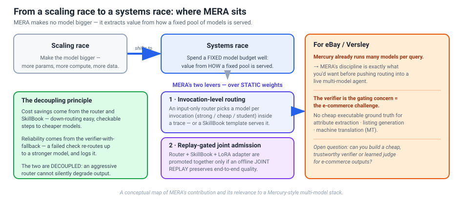
The big story you want to land is that AI has shifted from a scaling race to a systems race. For years the way to get better outputs was a bigger model. That curve is flattening, so the value increasingly comes from how you serve a fixed pool of models, not from training a larger one.
MERA is a clean instance of that shift. It makes no model bigger. Every gain comes from two ideas layered over static weights: per-invocation routing (send each easy, checkable step to a cheap model or a SkillBook template) and replay-gated admission (only promote a new router/skill/adapter state if an offline joint replay shows end-to-end quality held). You cut serving cost to 51.8% of always-large without retraining the underlying models at all.
That is exactly the frame for eBay/Versley. Their Mercury-style stack already runs many models per query, so the missing discipline is not "more models" but governed routing: route inside a multi-step agent trace, with a verifier-protected fallback so an aggressive router cannot silently degrade output, and a replay gate so updates can only help. That is what you'd want before pushing routing into a live multi-model agent.
The honest catch is the verifier, and it is also the real e-commerce challenge. MERA chose code generation precisely because verification is cheap there: you run the tests. eBay domains rarely give you that. Attribute extraction, listing generation, and MT have no cheap executable ground truth. So the open question MERA points at is whether you can build a trustworthy cheap verifier or learned judge for those outputs. That is a sharp thing to put directly to Versley.
Finally, the "grow a cheaper domain student over time" idea rhymes with e-Llama, raising a domain-tuned small model to absorb easy traffic. Be honest here: MERA's GRPO adapter is flat (46.5–47.5%) with no cumulative gain yet, so this is a direction, not a delivered result.
How to say it in the room: "MERA doesn't make a model bigger; it disciplines how a fixed pool is served, and the one piece that doesn't transfer to eBay for free is a cheap, trustworthy verifier."
14 · One thing to know before you share the repo
The public code repo — github.com/zeyuyuyu/router-skills-evolve — is a living research codebase that has moved on past the submitted workshop paper. If Versley browses it, he may see newer, larger experiments and some different engineering choices. Keep the two straight:
| The submitted paper (cite this) | The current repo (in-progress, do not cite as results) | |
|---|---|---|
| Headline | 87.3% router acc / 4.4% fb / 51.8% cost | A divergent draft quotes 99% task acc / 17% cost / 93.04% routing / 2.12% fb |
| Scale | 590 code tasks, Qwen2.5-Coder-1.5B | A 35B MoE adapter + a 3-domain tau2-bench agentic extension |
| Router (paper) | BERT-tiny over prompt text | The code path also explores TF-IDF + LogReg, and a single global "coding" skill |
How to say it if he raises the repo: "The submission is the four-cycle code-generation study — 87.3% router accuracy, ~52% cost. The repo has since grown the framework toward larger agentic settings, including a 35B adapter on tau2-bench; those are ongoing extensions I'd present as where the work is going, not as the paper's verified results." That keeps you anchored to numbers you can defend and honest about the rest.
15 · Say it in the room
The 10-second version: "MERA routes inside a multi-step agent trace — per invocation, not once per task — with a verifier-protected fallback, and only admits an update after a joint replay shows quality held. Cost from the router, safety from the verifier, decoupled."
The 30-second version: "Routing once per user task is too coarse, because easy and hard steps are interleaved inside one trace; but adapting every invocation is risky, because a cheap model can fail silently. So at runtime an input-only router picks strong / cheap / a 1.5B specialist, a SkillBook can fire a template, and a verifier checks the output and falls back on failure. Offline, the traces feed three tracks — SkillBook stats, a BERT-tiny router, a Qwen-1.5B LoRA+GRPO adapter — and a new combined state is promoted only if a joint replay preserves quality. Best four-cycle schedule: 87.3% router accuracy at ~52% serving cost, 4.4% fallback. I'm the third author."
The 2-minute version: start from the cost/quality dilemma → the interleaved-difficulty insight → the runtime loop (router + SkillBook + verifier-fallback, decoupled) → the offline loop (three tracks over shared step slices) → the joint-replay admission gate (the real contribution, conservative monotone deployment) → the honest numbers (87.3% router acc, flat 47.5% MBPP, no cumulative LLM gain) → the eBay bridge (Mercury runs many models per query; the verifier is the e-commerce challenge).
The single sentence to leave him with: "MERA is the routing-and-admission half of the systems-race story done carefully — and the open question I'd put to you is whether we can build a cheap, trustworthy verifier for e-commerce outputs, where there's no executable ground truth."